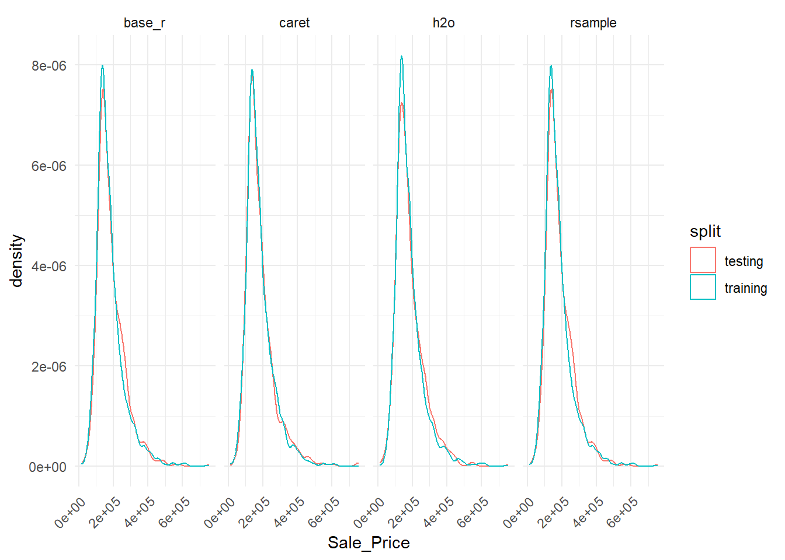
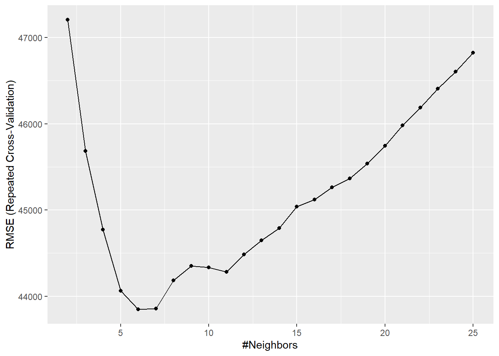

### Helper packages
library(dplyr) ### for data manipulation
library(ggplot2) ### for awesome graphics
### Modeling process packages
library(rsample) ### for resampling procedures
library(caret) ### for resampling and model training
library(h2o) ### for resampling and model training
### h2o set-up
h2o.no_progress() ### turn off h2o progress bars
h2o.init() ### launch h2o02_modeling_process
Set up data
### Ames housing data
ames <- AmesHousing::make_ames()
ames.h2o <- as.h2o(ames)
### Job attrition data
churn <- modeldata::attrition %>%
mutate_if(is.ordered, .funs = factor, ordered = FALSE)
churn.h2o <- as.h2o(churn)Interesting that the xxx.h2o objects are environments!
Data splitting
Simple random sampling
### Using base R
set.seed(123) ### for reproducibility
index_1 <- sample(1:nrow(ames), round(nrow(ames) * 0.7))
train_1 <- ames[index_1, ]
test_1 <- ames[-index_1, ]
### Using caret package
set.seed(123) ### for reproducibility
index_2 <- createDataPartition(ames$Sale_Price, p = 0.7,
list = FALSE)
train_2 <- ames[index_2, ]
test_2 <- ames[-index_2, ]
### Using rsample package
set.seed(123) ### for reproducibility
split_1 <- initial_split(ames, prop = 0.7)
train_3 <- training(split_1)
test_3 <- testing(split_1)
### Using h2o package
split_2 <- h2o.splitFrame(ames.h2o, ratios = 0.7,
seed = 123)
train_4 <- split_2[[1]]
test_4 <- split_2[[2]]Let’s try to replicate the plot:
base_r_df <- list(train_1, test_1) %>%
setNames(c('training', 'testing')) %>%
bind_rows(.id = 'split')
caret_df <- list(train_2, test_2) %>%
setNames(c('training', 'testing')) %>%
bind_rows(.id = 'split')
rsample_df <- list(train_3, test_3) %>%
setNames(c('training', 'testing')) %>%
bind_rows(.id = 'split')
h2o_df <- list(as.data.frame(train_4), as.data.frame(test_4)) %>%
setNames(c('training', 'testing')) %>%
bind_rows(.id = 'split')
all_df <- list(base_r_df, caret_df, rsample_df, h2o_df) %>%
setNames(c('base_r', 'caret', 'rsample', 'h2o')) %>%
bind_rows(.id = 'method')
ggplot(all_df, aes(x = Sale_Price)) +
geom_density(aes(color = split), fill = NA) +
facet_wrap(~ method, ncol = 4) +
theme_minimal() +
theme(axis.text.x = element_text(angle = 45, hjust = 1))
Stratified sampling
Explicitly control the sampling so testing and training sets have similar distributions over \(Y\) using stratified sampling. More common when response var is heavily imbalanced (e.g., 10% TRUE vs. 90% FALSE).
Also good for regression problems where small sample size and response var deviates strongly from normality (e.g., positively skewed like Sale_Price). Stratified sampling here partititions \(Y\) into quantiles and randomly samples from each.
### orginal response distribution
table(churn$Attrition) %>% prop.table()
No Yes
0.8387755 0.1612245 #
# No Yes
# 0.8387755 0.1612245
### stratified sampling with the `rsample` package
set.seed(123)
split_strat <- initial_split(churn, prop = 0.7,
strata = "Attrition")
train_strat <- training(split_strat)
test_strat <- testing(split_strat)
### consistent response ratio between train & test
table(train_strat$Attrition) %>% prop.table()
No Yes
0.8394942 0.1605058 # No Yes
# 0.838835 0.161165
table(test_strat$Attrition) %>% prop.table()
No Yes
0.8371041 0.1628959 # No Yes
# 0.8386364 0.1613636Class imbalances
Where one class has a small proportion (e.g., 5% defaults vs. 95% nondefaults).
- Down-sampling: reduces the size of abundant classes to match the frequencies in the least prevalent class (when quantity of data is sufficient). All samples of rare class and an equal number of random samples from the abundant class.
- Up-sampling: quantity of data is insufficient to down-sample. Instead, increases size of rarer samples by bootstrapping (sampling with replacement) from the rare class.
No specific advantage of one over the other. Combinations - Synthetic Minority Over-sampling Technique (SMOTE) - also used. This and others can be implemented in R.
Creating models in R
Formula interfaces
Suppose we have some generic modeling function called model_fn that takes a formula and a data frame as arguments. The formula specifies the model to be fit, and the data frame contains the data to be used. The formula interface is a convenient way to specify the model to be fit.
### Sale price as function of neighborhood and year sold
model_fn(Sale_Price ~ Neighborhood + Year_Sold,
data = ames)
### Variables + interactions
model_fn(Sale_Price ~ Neighborhood + Year_Sold +
Neighborhood:Year_Sold, data = ames)
### Shorthand for all predictors
model_fn(Sale_Price ~ ., data = ames)
### Inline functions / transformations
model_fn(log10(Sale_Price) ~ ns(Longitude, df = 3) +
ns(Latitude, df = 3), data = ames)Advantages and disadvantages… see the text!
Some other modeling functions have separate args for predictors and outcomes:
### Use separate inputs for X and Y
features <- c("Year_Sold", "Longitude", "Latitude")
model_fn(x = ames[, features], y = ames$Sale_Price)The h2o package uses x and y specifications as variable names for a dataframe.
model_fn(
x = c("Year_Sold", "Longitude", "Latitude"),
y = "Sale_Price",
data = ames.h2o
)Many engines
Different algorithm engines can be used to fit models, e.g., lm and glm; caret::train() is a meta engine (aggregator) that allows you to apply almost any direct engine with method = "<method-name>". These all generate the same basic linear regression output (in different formats though!):
lm_lm <- lm(Sale_Price ~ ., data = ames)
lm_glm <- glm(Sale_Price ~ ., data = ames,
family = gaussian)
lm_caret <- train(Sale_Price ~ ., data = ames,
method = "lm")Resampling methods
Validate a model by testing it on separate data withheld from training the model. But can be biased unless large datasets; resampling repeatedly fits models on different training subsets and tests against different testing subsets. Two most common methods:
- k-fold cross validation
- bootstrapping
k-fold cross-validation
Some ML functions allow for CV directly in the function call:
### Example using h2o
h2o.cv <- h2o.glm(
x = x,
y = y,
training_frame = ames.h2o,
nfolds = 10 # perform 10-fold CV
)Can also do it externally e.g., using rsample to set up the various folds:
(ames_cv <- vfold_cv(ames, v = 10))# 10-fold cross-validation
# A tibble: 10 × 2
splits id
<list> <chr>
1 <split [2637/293]> Fold01
2 <split [2637/293]> Fold02
3 <split [2637/293]> Fold03
4 <split [2637/293]> Fold04
5 <split [2637/293]> Fold05
6 <split [2637/293]> Fold06
7 <split [2637/293]> Fold07
8 <split [2637/293]> Fold08
9 <split [2637/293]> Fold09
10 <split [2637/293]> Fold10Bootstrapping
Random sample with replacement. Sample likely to contain duplicates; on average 63% of original sample ends up in any particular bootstrap. The non-selected samples are out of bag (OOB) samples. Train on selected samples and test on OOB samples.
Tends to be less variability in error message, but can increase bias of error estimate.
(ames_bs <- bootstraps(ames, times = 10))# Bootstrap sampling
# A tibble: 10 × 2
splits id
<list> <chr>
1 <split [2930/1099]> Bootstrap01
2 <split [2930/1077]> Bootstrap02
3 <split [2930/1043]> Bootstrap03
4 <split [2930/1086]> Bootstrap04
5 <split [2930/1116]> Bootstrap05
6 <split [2930/1076]> Bootstrap06
7 <split [2930/1067]> Bootstrap07
8 <split [2930/1080]> Bootstrap08
9 <split [2930/1061]> Bootstrap09
10 <split [2930/1084]> Bootstrap10Bootstrapping is an inherent part of certain ML algorithms - see bagging, random forests, etc.
Alternatives
If looking at time series, other considerations!
Bias variance trade-off
Prediction error can be decomposed into bias and variance components.
Bias
Error due to bias is difference between expected (average) prediction and correct value - a systematic deviation from the true value. High bias models are rarely affected by the noise introduced by resampling - it will maintain consistently high bias across resamples.
Variance
Error due to variance is the variability of a model prediction for a given data point. High variance models are sensitive to the noise introduced by resampling - it will have high variability in performance across resamples, and may not generalize well to unseen data. High variance models are more prone to overfitting. But many models have hyperparameters that control the model complexity, i.e., trading off between bias and variance.
Hyperparameter tuning
Hyperparameters are parameters that control the learning process, e.g., the number of trees in a random forest, or the number of neighbors in k-nearest neighbors.
Tuning hyperparameters can be tedious if done manually. A “grid search” method can be used to search through a grid of set values for each hyperparameter. Full cartesian grid search looks at every possible value in a defined set; random searches randomly sample from the grid; early stopping stops once the reduction in error is not marginally improving; etc.
Model evaluation
Goodness-of-fit tests and assessments of residuals - old school methods. But more modern methods look at predictive accuracy based on loss functions.
Regression models
Common loss functions include:
- MSE (mean squared error)
- RMSE (root mean squared error)
- MAE (mean absolute error) - less emphasis on large errors than MSE
- Deviance (mean residual deviance)
- RMSLE (root mean squared log error) - for log-transformed response vars, so small response values with relatively large errors have as meaningful an impact as large response values with large errors.
- R2: proportion of variance in the response variable that is predictable from the predictor variables.
Classification models
Common loss functions include:
- Misclassification rate
- Mean per class error
- MSE based on distance from 1 to the predicted probability, i.e., if model predicts A (0.91), B (0.07), or C (0.02), and the actual answer is A, then MSE is (1 - 0.91)^2 = 0.0081. If the answer were C, the MSE is (1 - 0.02)^2 = 0.9604.
- Cross-entropy - log loss or deviance - like MSE but with a log transformation of predicted probability. Punishes predictions where we predict a small prob for the true class - the more confident we are in the wrong answer, the higher the loss.
- Gini index - a small value indicates a node with predominantly one class, a large value indicates a node with a mix of classes. The Gini index is the probability of misclassifying a randomly chosen element if it were randomly labeled according to the distribution of labels in the node.
Classification models often use a confusion matrix to evaluate performance; for binary classifiers, combine different metrics from the confusion matrix:
- accuracty = (TP + TN) / (TP + TN + FP + FN)
- precision = TP / (TP + FP)
- sensitivity or recall = TP / (TP + FN)
- specificity = TN / (TN + FP)
- AUC - area under the ROC curve - a plot of sensitivity vs. 1 - specificity.
Putting the processes together
Simple assessment on ames data.
Stratified sampling:
set.seed(123)
split_strat <- initial_split(ames, prop = 0.7,
strata = "Sale_Price")
train_strat <- training(split_strat)
test_strat <- testing(split_strat)K-nearest neighbor regressor, using caret:
### specify resampling strategy
ames_cv <- trainControl(method = "repeatedcv", number = 10, repeats = 5)
### create grid of hyperparam values
grid <- expand.grid(k = seq(2, 25, by = 1))
knn_fit_file <- here::here('data/02_modeling_process_knn_fit.rds')
if(!file.exists(knn_fit_file)) {
### tune knn model using grid search
knn_fit <- train(
Sale_Price ~ .,
data = train_strat,
method = "knn",
trControl = ames_cv,
tuneGrid = grid,
metric = "RMSE"
)
save(knn_fit, file = knn_fit_file)
}
load(knn_fit_file)
knn_fitk-Nearest Neighbors
2049 samples
80 predictor
No pre-processing
Resampling: Cross-Validated (10 fold, repeated 5 times)
Summary of sample sizes: 1844, 1844, 1843, 1844, 1844, 1845, ...
Resampling results across tuning parameters:
k RMSE Rsquared MAE
2 47206.74 0.6596344 31133.25
3 45684.91 0.6773635 30007.71
4 44771.97 0.6901038 29276.09
5 44064.54 0.7005790 28996.93
6 43846.05 0.7045166 28895.48
7 43858.13 0.7059401 28883.74
8 44181.13 0.7033657 29055.05
9 44352.03 0.7028597 29109.00
10 44332.46 0.7053884 29129.62
11 44282.81 0.7083442 29081.39
12 44486.34 0.7075253 29155.41
13 44647.15 0.7076206 29256.68
14 44790.79 0.7077073 29307.11
15 45041.02 0.7063767 29423.86
16 45119.37 0.7073844 29484.00
17 45264.01 0.7070891 29586.22
18 45366.02 0.7072968 29641.92
19 45537.84 0.7066304 29766.52
20 45746.63 0.7052851 29907.89
21 45983.35 0.7031524 30058.55
22 46187.92 0.7017539 30192.39
23 46406.95 0.7001361 30329.98
24 46605.01 0.6986611 30483.94
25 46824.70 0.6971044 30617.33
RMSE was used to select the optimal model using the smallest value.
The final value used for the model was k = 6.ggplot(knn_fit)
With this setup we get a different plot than that in the tutorial, but still minimizing around 6-7.